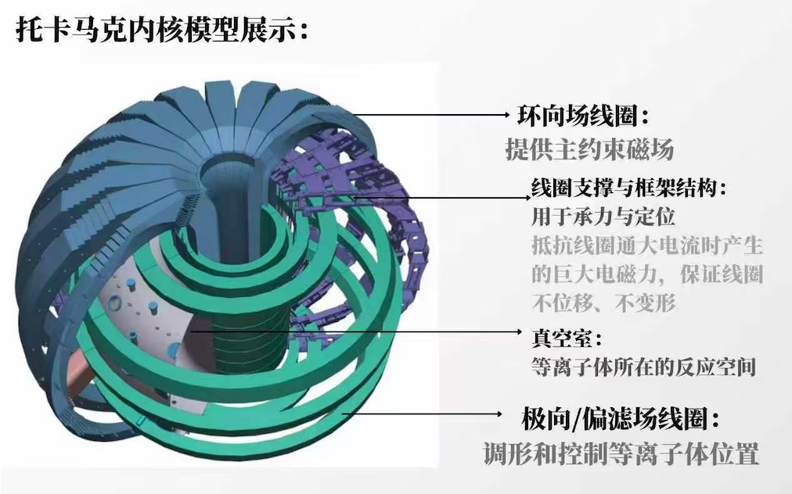

定义目标
先追问为什么做、为谁做，以及结果需要由什么证据来证明。
核工程与核技术 × 数学与应用数学
把想法做成
可以使用的系统。
中山大学本科生。关注 AI Agent 与系统架构，也在用 Unity XR 和 AI 协作开发，把专业问题与日常想法变成可体验的作品。

装置透视 / 部件解构 / 诊断图表
从一个问题开始，
让每一次构建都有下一步。
这里收录六个项目：有专业工程探索，也有从自己生活里长出来的小工具。点击分类快速浏览，或进入项目了解具体实现。
让专业数据与复杂装置变得可观察、可操作。
从记录行动，到练习成长，再到推进一个模糊的想法。
在情境剧场里练习，在现实小实验中验证。把规划、自律、探索与成长档案连成一条行动闭环。
把关键词、想法与对话展开为结构化方案。通过 AI 追问、演化时间线、看板和图谱，让想法有迹可循。
一个以 50 天为周期的习惯打卡器：每日行动、专注计时与复盘。它是 GrowLab 的前身，保留从轻量工具走向成长 Agent 的探索起点。
项目演进50 Day Discipline → GrowLab：从记录每天做了什么，到练习、行动与回访复盘。
把日常选择中的犹豫，转化为有反馈的决策流程。
让散落的素材有结构，让一段经历可以被探索。
我的性格偏向目标驱动和结构化推进。比起等待完美条件，我更愿意先定义问题、建立验证路径，再根据结果调整方向。
先追问为什么做、为谁做，以及结果需要由什么证据来证明。
列出条件、成本、能力缺口与机会，把大问题拆成可行动的阶段。
借助 AI Agent 与 Vibe Coding 形成可操作原型，让讨论落到真实界面和行为。
检查完成边界、失败原因与下一步，不用“做过”替代“做成”。
当前优势是快速理解需求、主动搭建结构并推动原型落地；需要继续补足的是更扎实的代码工程能力、定量评估方法和长期项目维护经验。
完成 Unity XR 交互链路、多个网页产品原型，并能把项目整理成公开、可浏览的成果。
系统学习 AI Agent 架构、工程化开发与数学基础，让快速构建不止停留在界面层。
完善聚变项目实机证据；把“我想花钱”从本地原型推进到多用户版本；持续沉淀可复用的 Agent 工作流。
成为能够连接专业知识、AI 能力与真实用户场景的系统架构型人才。